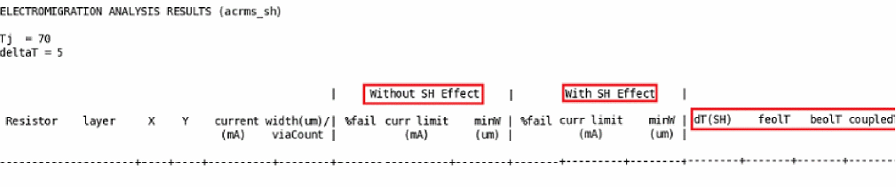

10
Self-Heating Effect Analysis
- Overview
- Data Requirements
- Compatible Software Versions
- Flow Overview
- Performing the Analysis
- Types of Plots
- Re-Evaluation of EM Limit Based on dTemp
- EMIR Control File Options
- Batch Mode Support for Running SHE Analysis and Thermal-Aware DC EM Analysis
- Command for Encrypting Data in param.sh File
- Generating Reports
Overview
The following topics are covered in this section:
Self-Heating Effect Analysis
As semiconductor technology scales down to sub-micron dimensions, power density increases, resulting in temperature increases—self-heating effect (SHE)—in devices. Semiconductor components are sensitive to temperature variations.
The main effects of self-heating are as follows:
- Degraded carrier mobility, which leads to a reduced on-current of transistors and, therefore, slower speed
- Higher interconnect metal resistivity, which results in longer delays
- Increased failure rate and reduced reliability of electronic devices, with secondary effects such as interconnect electromigration
In digital circuits, the key consequences are longer delays due to increased interconnect resistance and reliability issues due to electromigration. Analog circuits are more sensitive to temperature variations, which may degrade matching properties. Therefore, thermal simulations and modeling play an important role in the design of integrated circuits today.
The self-heating effect is driven by front-end-of-line (FEOL) self heat and back-end-of-line (BEOL) self heat.
- The FEOL is the first part of IC fabrication where the individual devices such as transistors, capacitors, and resistors are patterned in the semiconductor. FEOL covers everything up to, but not including, the deposition of metal interconnect layers.
- The BEOL is the second part of IC fabrication where the individual devices get interconnected with the wiring on the wafer. Both contribute towards the maximum rise in temperature or deltaT that causes the self-heating effect.
Thermal-Aware DC EM Analysis
The thermal-aware DC EM flow considers the local thermal effect – this includes both joule-heating and self-heating – in DC EM checks.
The thermal-aware DC EM flow is enabled by setting the following variable:
In the Variables form on the EM tab of the IR/EM Results form by specifying the following variable:
In batch mode by specifying the following command:
Voltus-Fi-XL supports the SHE analysis flow and the thermal-aware DC EM flow visualization. You can view the results of the these analyses by plotting them on the Virtuoso layout to show the worst deltaT violations. You can then debug your design to reduce the self-heating effect. In this chapter, the subsequent sections will provide details of the SHE analysis flow that are also relevant to the thermal-aware DC EM flow. Additional parameters and commands for the latter flow will be highlighted within these sections.
Hierarchical SHE Analysis
Voltus-Fi supports the generation of reports that are used by Voltus for Hierarchical SHE analysis. For this, the following option of the emirutil command is specified in the configuration file:
emirutil selfheating_report=[type=mos-region | metal filename=<filename>layer=<layername>tile=<no.of divisions in y-direction, no. of divisions in x-direction>]
For details of the above command, see EMIR Control File Options. The SHE reports that are generated are specified while performing hierarchical SHE analysis, using the Voltus command, analyze_self_heat.
Data Requirements
The table below lists the inputs that are required for, both the SHE analysis and the thermal-aware DC EM analysis in Voltus-Fi-XL:
Table 10-1 Data Required for SHE and Thermal-Aware DC EM Flow
setenv CDS_XVNC_TENBASE '+'
This variable is not required for run the SHE flow and the thermal-aware DC EM flow in the GUI.
This limitation will be removed in a future release of the software.
Compatible Software Versions
The table below lists the compatible software versions that are needed for running the SHE analysis flow and the thermal-aware DC EM flow:
| Product Name | Release Version |
|---|---|
Flow Overview
The diagram below illustrates the Pegasus/PVS LVS – Quantus – Virtuoso® Analog Design Environment L for Netlist and Config file generation – Spectre® APS – Voltus-Fi-XL flow for SHE analysis and thermal-aware DC EM analysis.
Figure 10-1 The High-Level Flow
Performing the Analysis
The following key tasks are performed for the SHE analysis and the thermal-aware DC EM flow:
- Running Pegasus or PVS LVS
- Running Quantus Parasitic Extraction
- Running Post-Layout Simulation using Spectre APS
- Viewing the Analysis Plots in Voltus-Fi-XL
These steps are detailed in subsequent sections.
Running Pegasus or PVS LVS
This is the first step, which involves verifying the layout connectivity and creating an LVS database that is required for the subsequent Quantus parasitic extraction.
Running Quantus Parasitic Extraction
This is the second step, which involves using the Quantus engine to create the xDSPF file for all the device parameters and interconnect parasitics.
Data Requirements for Extraction Setup
While setting up extraction for SHE analysis, ensure the following:
-
The Quantus command file should include the following command:
output_setup \ -keep_temporary_files "true"
When set totrue, the above command causes Quantus to leave the temporary files in the directory specified by theoutput_setup -temporary_directory_namecommand.
When set tofalse, Quantus removes the temporary files when extraction has completed. By default this option is set tofalse.
For more information about the Quantus command file options, see the “Quantus Command Files” chapter in the Quantus Extraction Users Manual. - The Quantus version used for performing SHE analysis in Voltus-Fi-XL should be either the same or higher than that being used in the extraction step
- The layout should open within Virtuoso without any pop-up window.
-
The OD shapes should be present in the layout for the OD layers specified in the file mentioned through the
shParamFileoption.
GUI Use Model
In the main menu of the Virtuoso Layout Suite, choose Quantus. Choose the Run Pegasus – Quantus or PVS – Quantus option. The Quantus Parasitic Extraction Run Form opens. Run extraction.
For detailed information about all the settings in the Quantus Parasitic Extraction Run form, see the “Quantus Graphical Interface” chapter in Quantus Extraction Users Manual.
The output includes the following:
- An xDSPF file, which contains all the parasitic information of the design – all the nets, x- and y-coordinates of transistors, parasitic resistors, and nets connected.
- A Quantus output directory, which contains the shape database.
Running Post-Layout Simulation using Spectre APS
Once extraction is done, run post-layout simulation using the EMIR control file (emir.config) file to create the SHE analysis reports. Before performing simulation, ensure the following in the ADEL or the Simulation window:
- Setup transient analysis.
-
Choose Setup – Simulation File – Model Files to add the SHE Models. These models are required to create the
*.dtemp#.xmlfile that contains information about the increase in temperature for each device. - Select Simulation – Reliability – Setup. The Reliability form opens. In this form, specify the following:
Now, you can start the simulation either by using Simulation – Run option or clicking the “run simulation” button provided in the right panel of the ADEL window.
Viewing the Analysis Plots in Voltus-Fi-XL
Once the simulation run is complete, the simulation database saved in the *.emir#_bin file is loaded into Voltus-Fi-XL to view the SHE analysis plots. The SHE analysis and thermal-aware DC EM analysis plots are available on the EM tab of the IR/EM Results form.
The steps for populating the EM tab of the IR/EM Results form are detailed in the Viewing the EM Analysis Results section of the “EM Analysis Results” chapter.
In addition, for the SHE analysis flow, ensure that the following inputs are provided on the EM tab of the IR/EM Results form:
- Enable the QRC Run.
- In the QRC Run Location pop-up window, provide the details of the QRC Run Directory and Run Name.
- Click Variables to open the Variables form. In this form, specify the following variables:
- Select rms and avg.
Figure 10-2 The IR/EM Results Form
- In the Plot Results group box, the self-heating effect analysis plots are available in the list. These are detailed in the section below.
Types of Plots
The types of self-heating effect analysis and thermal-aware DC EM analysis plots that are available in the list are detailed below.
Thermal-DeltaT Regions
Reports the increase in temperature (deltaT) for all OD and metal layers in the entire design on the Virtuoso layout. This plot provides a detailed view of the temperature variations on the design. This is shown in the figure below.
Figure 10-4 The Thermal-DeltaT Regions Plot
Thermal-DeltaT Tiles
Reports the increase in temperature (deltaT) per tile based on the number of tiles, specified in the IR/EM Results form, on the Virtuoso layout. For this plot, specify the dimensions for the tiles in the Tiles text box on the EM tab of the IR/EM Results form. The design in the layout is divided into sections based on the number of tiles that are specified, for example, 15x20.
On the Virtuoso layout, the tiles are colored on the basis of the maximum temperature increase in each tile. This is shown in the figure below.
Figure 10-5 The Thermal-DeltaT Tiles Plot
RJ_SH - Current Density/Limit - max (SH)
Analyzes and reports the J/JMAX violations based on peak current after performing the SHE analysis.
JAVG_SH - Current Density/Limit - avg (SH)
Analyzes and reports the J/JMAX violations based on the average currents after performing the SHE or thermal-aware DC EM analysis.
JACRMS_SH - Current Density/Limit - rms (SH)
Analyzes and reports J/JMAX violations based on the RMS value of the AC currents after performing the SHE analysis.
Re-Evaluation of EM Limit Based on dTemp
The EM effect is re-evaluated based on the new temperature. In the SHE flow, this temperature is the sum of the simulation temperature and the changed temperature due to the self-heating effect. In the thermal-aware DC EM flow, this temperature is the sum of the simulation temperature and the changed temperature due to joule heating and the self-heating effect.
The Current_Limit is calculated based on this new temperature and compared with the actual current flowing through the metal resistor to find the EM pass or fail.
The shEMEffect variable is used to re-evaluate the EM limit based on individual metal BEOL_T and tile BEOL_T temperatures. This variable is set using the set_variable command in the Voltus-Fi command file:
To re-evaluate EM on individual metal BEOL_T:
To re-evaluate EM limit based on tile BEOL_T temperature:
set_variable shEMEffect tiles_no.of divisions in y-direction X no. of divisions in x-direction
EMIR Control File Options
A complete list of the EMIR control file options that are supported in Voltus-Fi-XL is provided in the table, EMIR Control File Options Supported in Voltus-Fi-XL, in the “Data Preparation” chapter.
In addition, there are some options that are specific to the SHE flow and the thermal-aware DC EM flow. The table below provides a list of options that are specified in the emir.conf file for these analyses.
Table 10-2 Supported EMIR Control File Options for Self-Heating Effect Analysis
| Keyword | Option Set | Explanation | Default Value |
|---|---|---|---|
|
Turns on the self-heating effect analysis for the specified device under test (DUT). Note: Ensure that the Irms option is specified in the control file. |
|||
|
Specifies the instances on which SHE analysis will not be performed. |
|||
|
Specifies the models on which SHE analysis will not be performed. |
|||
|
Specifies the self-heating effect analysis parameter file, which is required for calculating the SHE analysis results.
A sample |
|||
|
Defines the SHE EM analysis threshold value for the resistors being reported. The value for
Note: Specifying this option is equivalent to filtering all resistors that have passed the EM analysis check. |
|||
|
Specifies the XML file to be used in the SHE analysis flow. This file contains information about the temperature change for every instance.
From Spectre16.1 ISR7 release onwards, the path of the XML file need not be specified in the emir configuration file. The software is enhanced to automatically locate and use the file for SHE analysis.
Specify the |
|||
|
|
Specifies the basis for the re-evaluation of EM effect.
|
||
|
Specifies whether or not the OD shape extension is to be done. |
|||
|
Specifies the range of the OD shape expansion. The unit of this parameter is um (micro meter). |
|||
|
Specifies whether or not metal-shape expansion is to be done for joule-heating calculation. |
|||
|
Specifies the range of the design resistor shape expansion. The unit of this parameter is um (micro meter). The default value may be different for different process nodes. |
|||
|
Specifies the ambient temperature for self-heating analysis. If this value is not specified, the software calculates it as |
|||
|
When set to |
|||
|
When set to |
|||
|
When set to |
|||
|
Specifies the path of the cds.lib. It is used to specify the path when the |
|||
|
Specifies the Quantus run directory and run name. This parameter is required for self-heating effect analysis. |
|||
|
|
Generates the self-heating effect report, which is a text file. You can specify whether the report should contain deltaT information for the specified mos-region or metal and resistor or tile-based by using the relevant parameters.
To generate hierarchical SHE analysis reports using this command, the VTS-Fi-AA license is required to be checked out. This is an advanced license that is not available as part of the Voltus-Fi-XL license.
If you do not want to perform hierarchical self-heating analysis, ensure that this option is not specified in the configuration file.
The SHE EM analysis reports can be generated by specifying the |
||
|
|
Generates the EM report with the self-heating effect. You can specify the following:
|
||
|
Generates a thermal resistance report with cell name and its corresponding resistance |
|||
|
The options listed below are specified only for the SHE flow with heat-sink effect |
|||
|
When set to |
|||
|
Specifies the expanded region of the OD. The heat sink structure inside this region can only act as heat sink for the specified OD shape. |
|||
|
Specifies the list of layers to identify connecting ODs for heat sink effect. The default value is shown below.
|
|||
|
Specifies the self-heating effect analysis parameter file, which is required for calculating the SHE analysis results with heat-sink effect. |
|||
|
When specified, generates the heat-sink self-heating factor report. |
|||
Heat-Sink Self-Heating Sample Report:
--------------------------------------------------------------------------
VERSION: <version>
HEADER:
OD_Name llx lly urx ury od_area od_dT od_dT_p od_dT_p_be od_dT_p_fe
connecting_wire layer totalA_on_region
connecting_via layer totalA_on_region
connecting_OD od_cell od_dT od_area layer
-------------------------------------------------------------------------
For more information about how to set the emirutil command options, see Using the emirutil Command in the EMIR Control File in the “Variables” chapter.
Batch Mode Support for Running SHE Analysis and Thermal-Aware DC EM Analysis
You can run the SHE analysis and thermal-aware DC EM analysis in batch mode.
For SHE analysis, set the following variables using the set_variable command:
set_variable shParamFile param_sh.file
set_variable shXMLFile xml_file
set_variable shEMEffect {beolT | tiles_no.of divisions in y-directionXno.of divisions in x-direction}
For thermal-aware DC EM analysis, in addition to the above commands, specify the following:
set_variable coupledSH true
set_variable extendJouleHeating true
set_variable extendSHRegion true
For more information about the above variables, see the “Variables” chapter.
The commands listed below are common for both flows, SHE and Thermal-aware DC EM analysis:
-
load_view
Specifies the layout to be used for SHE analysis. The syntax is provided below.load_view \ -libname
lib\ -cellnamecell\ -viewnamelayout -
qrc_run_directory
Specifies the location of the Quantus run directory. The syntax is provided below.qrc_run_directory
run_directory -
qrc_run_name
Specifies the Quantus run name. The syntax is provided below.qrc_run_name
qrc_run_name -
load_em_results
Loads the results of EM analysis. The syntax is provided below.load_em_results \
-tech_filetech_file_name\[-layer_mapfile
layer_map_filename] \results_file_name -
print_em_report
Prints the EM analysis reports. The syntax is provided below.print_em_report \
-net -all_nets \
-type [acrms_sh | avg_sh | peak_sh] \
-filename
output_file_name -
print_thermal_report
Prints the thermal reports for the hierarchical self-heating EM analysis.print_thermal_report \
-type {mos-region | metal} \
[-tiles
tile_matrix] \-filename
output_file_name
For details of the above commands, see the “Batch Mode Execution” chapter.
The following set of commands report the results of SHE analysis for cell, cell1 of library, test_lib. The SHE analysis results will be reported in the ./acrms_sh.txt file. The OD regions temperature will be reported in the mos-region.txt file:
load_view -libname test_lib \ -cellname cell1 \ -viewname layout
qrc_run_directory svdbqrc_run_name design
load_em_results \-tech_fileqrcTechFile-layer_mapfilecontactmapfile/input.emir0_bin
print_em_report
-net all_nets \
-type acrms_sh \
-filename ./acrms_sh.txt
print_thermal_report \
-type mos-region \
-filename ./mos-region.txt
Command for Encrypting Data in param.sh File
Voltus-Fi supports encrypting the contents of the param.sh file to hide confidential data. Use the below command to encrypt the contents of the file using the vfibatch command:
The contents of the cmd-file-name file are as follows:
encrypt_file filename
-input_file_name <> filename
-output_file_name <>
-input_file_name is the name of the file whose contents are to be encrypted
-output_file_name is the encrypted file as viewed by the user. It contains the contents of the input file with confidential data in encrypted form.
In the input file, the text to be encrypted is placed inside below tags:
<Encryption Start>...<Encrypton End>
A sample input file whose contents are to be encrypted is shown below:
line1
line2
line3
line4
<Encryption Start>
Encrypt line1
Encrypt line2
<Encryption End>
line5
line6
The output file for the above input file is shown below:
line1
line2
line3
line4
<Encryption Start>
u s f i’{B` :#zV-?~ v o l trcn3 tpeni
EsvAr v o l* w}1–kB9dP…
<Encryption End>
line5
Generating Reports
The text reports for both SHE and thermal-aware DC EM analysis are only available in batch mode using the sequence of commands detailed in the above section. The types of reports that are generated are detailed below:
-
Thermal reports containing temperature rise of OD region and metal resistors.
The format of the OD region report is as follows:
Figure 10-6 OD Region Report FormatFor thermal-aware DC EM analysis, when the optionextendSHRegionis set to true, the OD region report format is as follows:
Figure 10-7 OD Region Report Format for Thermal-Aware DC EM FlowThe format of the metal resistors report is as follows:
Figure 10-8 Metal Resistors Report Format -
Tiles-thermal reports containing temperature rise of OD region and metal resistors based on the specified tile matrix.
The format of the metal resistors report (tile-based) is as follows:
Figure 10-9 Metal Resistors Tile-Based Report FormatThe format of the OD region (tile-based) report is as follows:
Figure 10-10 OD Region Tile-Based Report Format -
The SHE EM reports containing dTemp of each parasitic resistor and EM report (including
pass/fail,em_limit,andneeded width) both with and without the self-heating effect. The following reports are generated:-
acrms_sh.txt: AC RMS EM report both with and without the self-heating effect -
avg_sh.txt: Average EM report both with and without the self-heating effect -
peak_sh.txt: Peak EM report both with and without the self-heating effect
The formats of these report file are provided below.
Figure 10-11 AC RMS EM Report FormatFigure 10-12 Average EM Report FormatFigure 10-13 Average EM Report Format for Thermal-Aware DC EM AnalysisFigure 10-14 Peak EM Report Format -
-
Thermal resistance report with cell name and thermal resistance (Rth) value. This is only generated in the thermal-aware DC Em flow.
Figure 10-15 Thermal Resistance Report Format for Thermal-Aware DC EM Analysis
Return to top